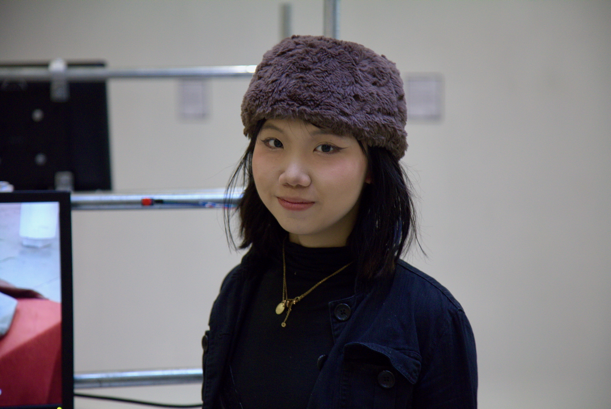

Yunzhi / Melissa Li is a Chengdu-born, London-based computational artist whose practice spans interactive installations, web-based experiments and immersive 3D environments. She examines how images, code, and audience interaction shape our sense of identity, memory and place. Her works have been exhibited in the UK and internationally, at the Victoria and Albert Museum, the Photographers’ Gallery, Hypha Studios, Copeland Gallery, Peckham Digital, among others.
At the heart of Li’s work is translating intangible experiences, making the unseen visible. She gathers data, whether that is from public image archives, 3D scans of everyday objects and recordings of personal stories, and then layers them into physical and digital spaces. Chairs, tables and screens become shifting canvases where virtual textures appear to merge with the material world. This blending of online and organic systems invites viewers to consider how their personal experiences, histories and digital traces intertwine.
Beyond gallery walls, Li co-founded art collectives, Cranberry Lemonade and Phreaking Collective. Cranberry Lemonade focuses on workshops in HTML, CSS and JavaScript, inviting participants to demystify web creation and tell their own digital stories. Phreaking Collective is a group of emerging computational artists that organise self-initiated exhibitions, events, and talks with guest speakers.
Looking forward, she plans to further develop this collaborative model by integrating sensor networks and community-sourced data, creating site-responsive installations that blend personal histories into immersive experiences.
Seen on: https://startgallery.co.uk/yunzhi-li
we[dot]art — curated creative directory : https://wedotart.com/melissayunzhi
